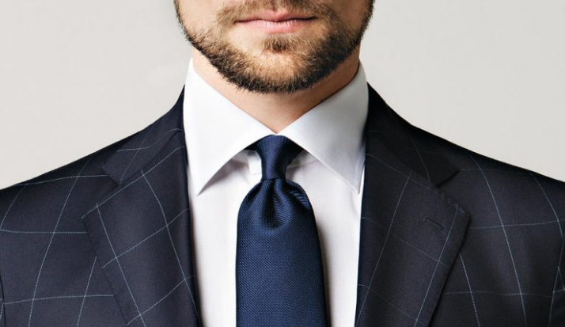
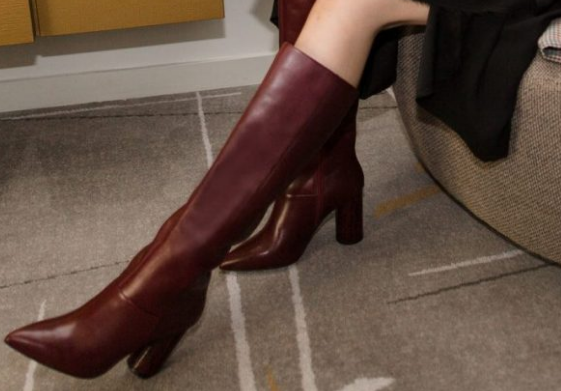
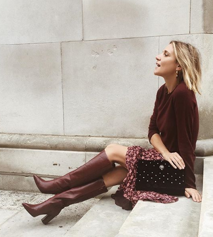
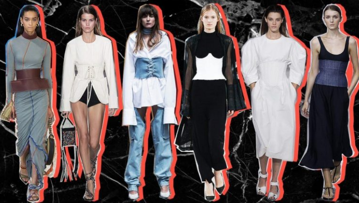
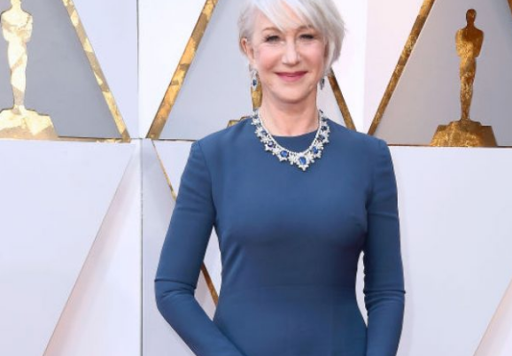

Të vishesh mirë do të thotë të jesh i suksesshëm
Studimet tregojnë se mënyra se si visheni ndikon në mënyrën se si njerëzit ju vlerësojnë,
sa vetëbesim keni dhe sa i aftë jeni për të menduar në mënyrë abstrakte.
Në një studim të kryer në Yale, u përzgjodhën 128 burra nga mosha 18 deri në 32, të cilët duhet të bënin negociata për shitjet dhe blerjet. Ata që ishin veshur keq morën një përfitim prej 680 mijë dollarësh, ndërkohë grupi i veshur me kostume grumbulloi 2.1 milionë dollarë. Grupi i veshur thjesht mori një përfitim mesatarisht prej 1.58 milionë dollarësh. Në një studim tjetër, pjesëmarrësit e veshur mirë ishin më të angazhuar te qëllimi, duke i menduar gjërat si një shef ekzekutiv, ndërkohë që ata të veshur jo-mirë shqetësoheshin vetëm për detajet e vogla. “Njerëzit që vishen mirë ndihen më të fuqishëm. Kur ndihesh më i fuqishëm, ti nuk fokusohesh në detaje”, thotë Michael L. Slepian, bashkautor i studimit dhe asistent pedagogu në Shkollën e Biznesit të Kolumbisë, shkruan Business Insider, përcjell Telegrafi. Si ju duket kjo këshillë për stilin tuaj të përditshëm? Në kodin e sotëm të veshjes së zyrës, paraqitja e jashtme mund të ketë një efekt edhe më të madh. Por sigurohuni që të ndiqni rregullin ‘plus ose minus një’ për veshjen në kompani. Për shembull, në qoftë se shumica e njerëzve në zyrë veshin këmisha serioze, ju mund të vendosni një xhaketë sportive. Nëse shumica e njerëzve veshin xhaketë dhe xhinse, ju mund të vishni një kostum. Dhe kështu me radhë.

Moda për këtë vit: Çizmet të cilat nuk do të mendoni dy herë për t’i blerë
Ndoshta nuk jeni adhuruese e madhe e çizmeve të gjata, por çizmet e mëposhtme do t’jua ndryshojnë mendjen këtë sezon.
A pyesni veten ku i keni parë këto çizme?
Këto çizme fillimisht i kemi parë në Instagram-in e Laura Fantaccit nga WIT Blog, dhe duke e parë sa e mrekullueshme dukej, normalisht se nuk mund të qëndroni pa e imagjinuar veten si do të dukeshit në të njëjtat këpucë..Dhe, siç kanë treguar kritikët, çizmet përveç se duken tejet të bukura, ato gjithashtu janë shumë komode për këmbët tuaja. Ato mund të jenë pak të shtrenjta, por pasi që janë nga lëkura kjo nuk mund të jetë një investim i keq. 

Pesë trendet të cilat dëshmojnë se vitet e 80’ta janë rikthyer
Janë këto 5 trendet e fundit që janë rikthyer nga vitet 80.
Më poshtë i kemi listuar ato edhe për ju që te mund të shihni nëse edhe ju keni diqka nga ato.
Xhaketat “Denim” të personalizuara
Nëse nuk do të kishit një xhaketë të mbuluar me pjesë të qepura , me kunja, apo arna në vitet ’80, po bënit diçka të gabuar.
Dy dekada më vonë, dhe xhaketa e guximshme është kthyer krejtësisht.
Nëse keni një veshje të tillë nga vitet ’80, ose e përshtatni vetë, sigurohuni që prerja të jetë e madhe.
Syzet pasqyrë
Syzet e diellit të reflektuese dhe të pasqyruara, që luajtën rol të madh në kulturën
“Pop” kohët e fundit janë rishfaqur, deri në pikën ku janë bërë edhe trend, jo vetëm një stil preferencial.
Materialet shkëlqyese
Veshje dhe funde me shkëlqim ishin në modë, ndërsa dizajnerët si
Karen Walker i kanë përdorur materialet shkëlqyese në këmisha, pantallona të shkurtra dhe fustane të shndritshme.
Korsetet e mëdha në bel
Korsetet e mëdha në bel me këmisha të bardha i kemi parë mjaft shumë këtë vit, ato mund të bëjnë çdo veshje të duket elegante.
Fustanet me fallta
Konsiderohen shumë femërore ose shumë të vjetra për dekada, ne jemi duke
parë një rigjallërim serioz fyell, në sajë të dizajnerëve si Rosie Assoulin, Balmain, Isabel Marant, dhe më shumë.

Helen Mirren bën përzgjedhje të modës që nuk përshtaten me moshën e saj
Diva hollivudiane, Helen Mirren, është kritikuar për zgjedhjen e një aksesori në kombinimin e saj.
Ajo ka publikuar një fotografi në rrjetet sociale, në të cilën shihet e veshur me rroba të përditshme.
73-vjeçarja për dallim nga paraqitjet e saj në tepihun e kuq, aktorja është shfaqur me rroba të zakonshme – pantallona të zeza dhe një bluzë të ngushtë, ndërsa në shpinë kishte një çantë të zezë.
Pikërisht, ky aksesor u ka rënë në sy ndjekësve të saj, shumë prej të cilëve nuk u ka pëlqyer.
“Jo, jo, jo, Helen. Ti je aq e bukur dhe e përsosur. Pse e mban atë çantë? Nuk i ke më 19 vjet”.
“Siç po shoh, je kthyer në shkollë”.
“Je shumë e moshuar për ta mbajtur atë” – janë disa prej komenteve.
Të tjerët i kanë kushtuar vëmendje çmimit të asaj çante (441 euro), e cila është prodhim i brendit luksoz amerikan, Tumi.
Helen Mirren është aktore angleze, e cila ndër çmimet e shumta, e ka fituar çmimin Oscar (“The Queen”, 2007), si dhe i ka fituar çmimet Olivier dhe Tony si aktorja më e mirë në teatër.